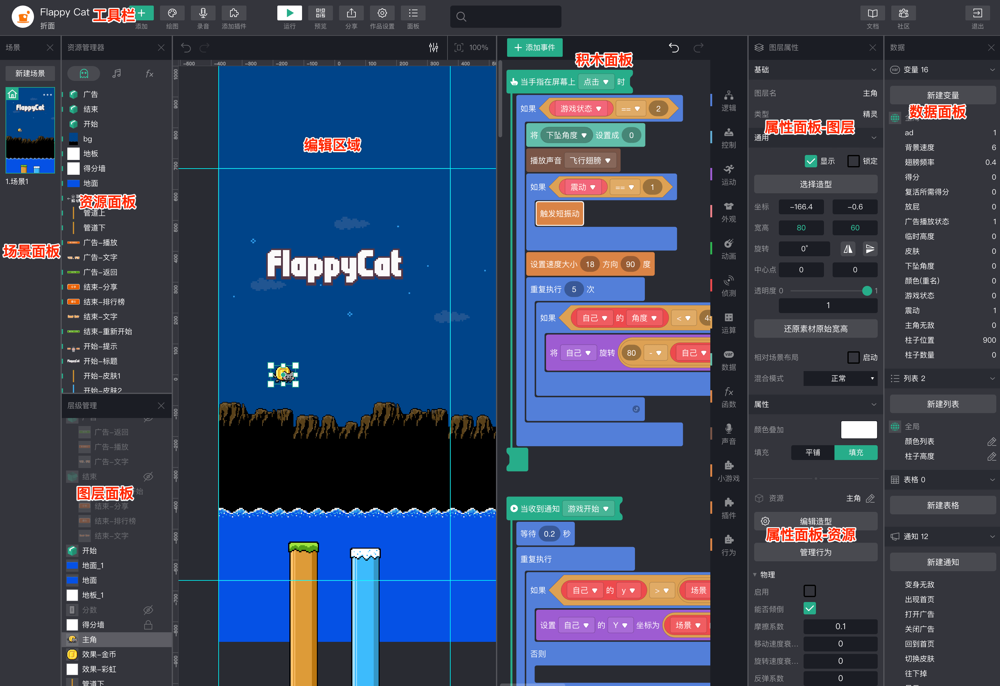
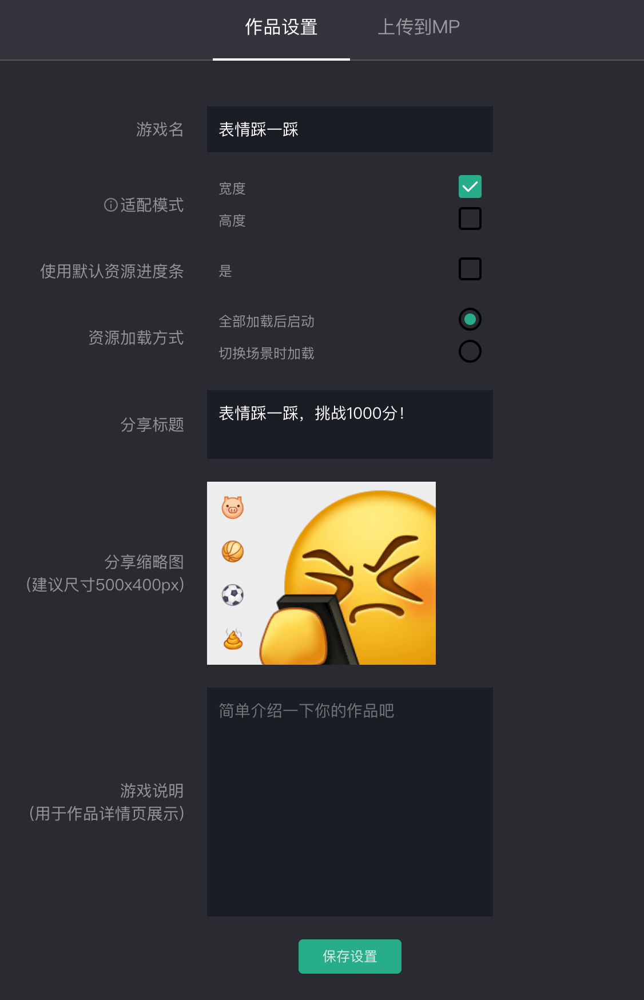
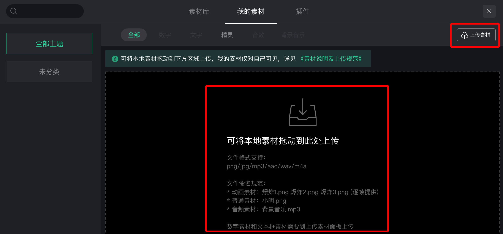
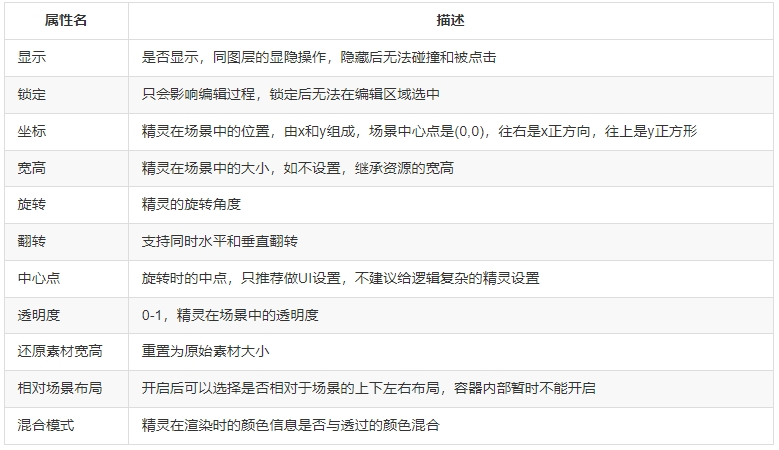
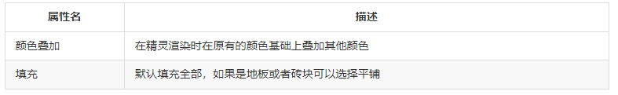
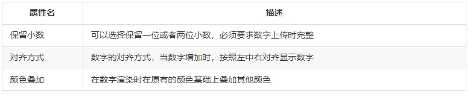
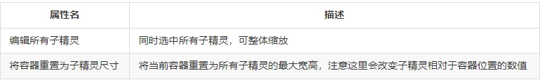
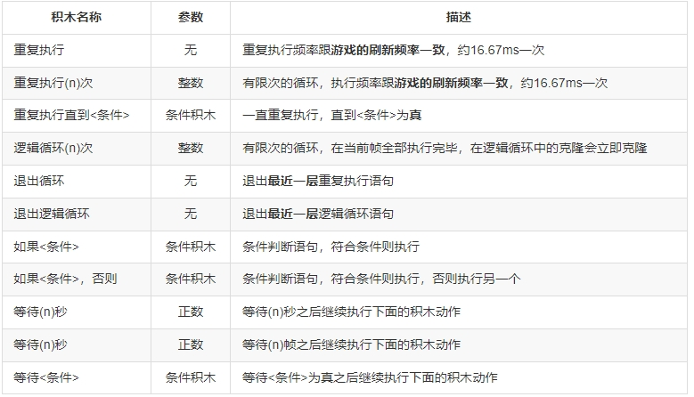
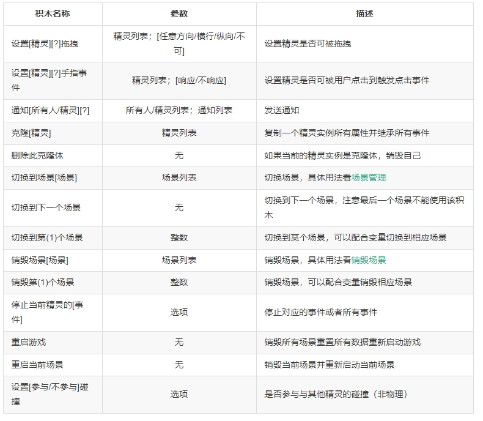
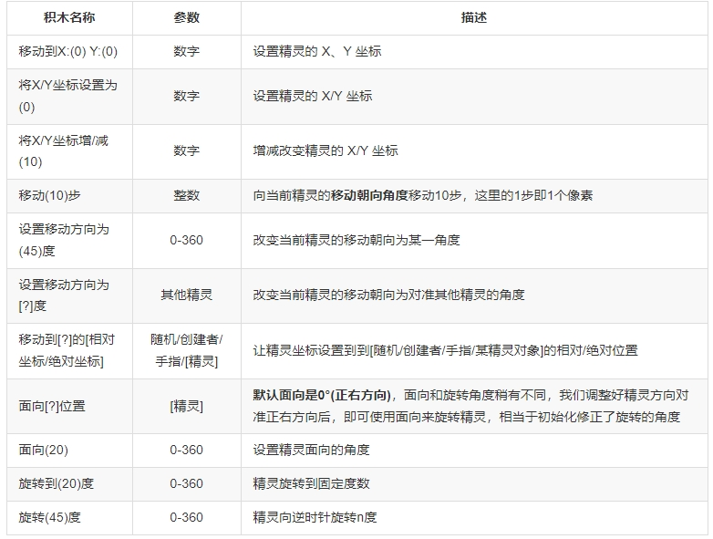

微信小游戏制作
概览
工具
微信小游戏使用《小游戏可视化制作工具》进行制作开发。《小游戏可视化制作工具》是一款web应用，可用于开发微信小游戏。以可视化的操作方式编辑游戏场景，使用积木作为脚本设计精灵的行为逻辑。
《小游戏可视化制作工具》推荐使用Chrome浏览器或者最新的QQ浏览器打开。
《小游戏可视化制作工具》支持微信扫码登录，创建的小游戏项目为开发者私人所有，无法跟他人共享或共同编辑。
《小游戏可视化制作工具》的账号密码登录为团队开发登录使用，暂未开放注册。
小游戏编辑器介绍

概览编辑器，可分为8个区域，分别是：
- 工具栏：添加素材，运行游戏，预览发布，搜索，保存退出等功能入口；
- 场景面板：添加/切换不同场景，如果游戏复杂可能存在多个场景，比如：不同关卡、开始界面、结束界面等等；
- 资源面板：管理当前项目的所有资源（包括精灵/声音/函数），资源管理器中的精灵可拖拽进入编辑区域生成一个新的图层精灵实例；
- 积木面板：用于控制精灵实例的积木脚本，积木是与资源一一对应的，一个资源的多个实例图层都会公用一套积木；
- 图层面板：管理当前场景中的精灵实例，已经在编辑区域有实例的精灵都是一个图层，在图层面板可以拖拽调整图层顺序，也可以打组成为容器（Ctrl+G）；
- 编辑区域：这里就是所见即所得的游戏界面！编辑区域与图层是一一对应的，我们可以选中区域中的精灵实例进行拖拽位置，调整大小等；
- 属性面板：由两块组成，当我们选择资源时，只显示资源属性，当我们选择图层时，同时显示图层属性和资源属性。每个图层都有自己的属性互不影响；
- 数据面板：对（全局/精灵私有）的变量/列表/表格/通知等数据进行管理
制作流程
- 在浏览器中打开制作工具
- 通过 [新建小游戏/复制示例/改编他人作品] 等方式创建一个游戏项目
- 导入素材，编辑场景，拖入积木，完善游戏
- 在电脑上运行调试
- 在移动端预览调试，也可以分享给他人体验
- 发布到MP平台，完成小游戏
游戏世界
精灵
在计算机图形学中，当一张二维图像集成进场景中，成为整个游戏的一部分时，这张图就被称为精灵（英：Sprite）
数字
数字也是一类特殊的精灵，它是由 “0-9” 十个数字及“-”和“.”组合形成的一个整体。使用也非常方便，可以通过以下这组积木进行实时动态修改。
外观-「修改[?]的值为(n)」
外观-「将[?]的值增加(1)」
文字
文字也是一类特殊的精灵，添加之后可以在图层属性面板修改：对齐方式、字体大小、行高、文字颜色。只能通过以下积木修改内容。
外观-「修改[?]的内容为(你好)」
编辑器
工具栏
作品设置

[适配模式] 我们可以调整在移动端的适配模式，推荐竖屏游戏使用宽度适配，横屏游戏使用高度适配
[使用默认资源进度条] 是否显示默认资源加载中的提示
[资源加载方式] 如果项目非常大并且多个场景，建议选择切换场景时加载，并且搭配[资源管理]插件一起使用，建议默认选择全部加载后启动
[分享标题] 设置一个好的分享标题可以吸引别人玩你的游戏，出现在小游戏分享给好友的卡片中，如不设置默认显示项目名
[分享缩略图] 分享图非常关键，无论是在预览时分享给好友，还是在社区，还是发布成独立小游戏，分享作品时该图片是给人的第一印象
[游戏说明] 游戏说明会出现在社区的项目页中，只有需要分享时才有必要设置该项游戏适配
1、设计尺寸
目前通过可视化工具制作的游戏只能运行在微信小游戏端。官方设定的设计尺寸是：7501334，也就是iPhone 7的尺寸。因此在iPhone 7的手机中，可以完美的展示制作工具中看到界面，不会有任何裁剪或者黑边。也会依照此比例，在其他设备上进行等比缩放。循环滚动逻辑会改造为插件模式。*
2、适配方案设置背景图片的高度设计更高一点，为iPhone X的高度。或者将背景精灵纹理进行拉伸处理，这样能把黑边填充满。
设置适配模式为适配高度，将游戏等比缩放，假如iPhone X的高度是iPhone 7 的1.2倍，结果是将游戏等比放大1.2倍。但这种方法带来的问题是水平方向会裁剪，左右会失去一部分细节。
通过开启相对于场景布局来调整精灵在不同屏幕尺寸中的适配情况，无需过多的操作，只需要在场景中摆放完后选择开启想要的布局模式即可
资源管理
游戏素材是游戏的“原材料”，通常包含图片、文本、音频。图片又可分为：单图、帧动画等。
在《小游戏可视化制作工具》中，游戏资源有以下几类
[精灵] 最常用的资源，用途广泛甚至可以替代背景
[文字] 特殊的精灵，有两种文字类型，基础文字和带气泡背景的文字，常用于标题，按钮和提示等展示
[数字] 特殊的精灵，由0-9和.-两个符号组成，相当于特殊字体，常用于展示得分和其他数值变化
[背景] 特殊的精灵，每个场景只有一个且自动生成，并且不会超出屏幕区域，只适用于快速搭建小场景游戏
[容器] 多个精灵的组合层，本身也是独立的空精灵
[UI插件] 特殊的资源，自带一些行为属性，较为独立，部分积木无法影响到UI插件
[声音] 可以被积木引用并播放
[函数] 多个积木的合集，适用于需要在不同精灵多次使用相同积木组合的场合
游戏资源 = 素材 + 积木。换句话说可视化制作工具中的资源是具有积木逻辑的素材
- 系统素材
素材库包含：系统素材/我的素材/UI插件三个部分，官方提供了多个拥有自主版权的主题素材，如：《积木小Y》、《彩色飞机大战》等。
素材库中的积木小Y是主要 文本/数字 等素材的导入入口，其中 [基础文字] 最为常用
上传素材

使用上传素材需要切换到[我的素材]Tab页，同时针对上传的素材有特殊要求：单图和音频：将素材拖拽扔进我的素材或者上传素材的上传区域即可
帧动画组：打开上传素材界面，并将帧动画组的素材名称规范命名为：xx1.png、xx2.png、xx3.png、xx4.png、xx5.png…，然后选中整个帧动画组整体拖拽扔进上传区域，即可自动生成帧动画组素材
数字：打开上传素材界面，将数字以规范命名为：xx1.png、xx2.png、xx3.png等，即可自动填充到对应的位置，也可以手动点击单个窗口上传对应的数字和字符，只有上传了负号和小数点的数字精灵，才支持负数和显示小数，否则只能显示正整数
文本框：打开上传素材界面，上传一张图片作为文本框的背景，还可以调整文本有效区域和真实图片之间的间距
绘图：开发者可以自行对素材进行编辑修改或者创作一些简单的素材
录音：开发者可以创作个性的录音素材，并对素材进行剪辑等操作
绑定积木脚本：资源是和积木逻辑绑定的，每一个素材资源对应一套积木，关于积木脚本的详细信息可参考后续文章
资源的复用
除了从素材库添加资源时默认创建在当前场景中的图层实例，还可以从资源管理器直接拖拽“精灵素材”至当前的编辑区域，即可在当前“场景”添加一个精灵实例，并同时会生成一个对应的“图层”。
该实例是“精灵素材”资源的引用，将完全继承“精灵素材”的所有积木脚本。其属性会复制原始的“精灵素材”，可以在图层属性面板修改这些属性。声音和音效
声音资源也是从素材库添加，声音分为 [音效] 和 [背景音乐] 两类，在资源库中他们名并没有实际的区别，上传声音素材时，时间过长的会被分类为背景音乐，较短的被分类为音效，可以通过选择全部主题，点击音效来播放预览系统提供的一些音效
声音是咖啡色的积木，总共只有5个相关的积木，我们推荐音效使用播放，背景音乐使用循环播放，在一些手机系统导致的声音暂停的情况下，我们会在重新进入小游戏时把背景音乐自动重启
在编辑游戏的过程中往往会反复调试音效，记得多使用资源面板中的替换音效功能而不是直接删除再添加，会省力的多
- 场景管理
可以添加多个场景，并设置某一个场景为主场景，主场景并不一定是第一个场景，场景之间是通过积木「切换场景到XX」来互相跳转的，目前暂不支持场景的排序
和场景相关的积木：
- 「事件-当场景启动时」
- 「控制-切换场景到XX」
- 「控制-销毁XX」
- 「控制-重启当前场景」
主场景
游戏首次加载的场景我们称为主场景(左上角有房子标识)。
在主场景中我们可以使用「当游戏开始时」积木作为启动事件，此事件只会触发一次。其他场景可通过「当场景启动时」作为启动事件。
这里推荐所有入口都用「当场景启动时」作为启动场景的入口事件，「当游戏开始时」这个积木使用限制较多，只推荐在做简单的demo时使用
- 图层管理
层级
图层的顺序影响精灵实例渲染的顺序，以及影响该实例对应的资源积木逻辑执行的顺序，所以管理好图层顺序也很重要，可以通过拖拽来调整图层层级顺序（不能拖动到背景层下方）
隐藏和锁定
图层面板选中图层后右键或者点右侧的菜单按钮会出现 [隐藏/锁定/删除] 三个操作：
[锁定] 图层的层级在编辑区域也会影响到下一层精灵的选中，我们可以暂时锁定上层的精灵，方便我们选中下一层，这里的锁定只会影响编辑，并不会对游戏运行过程产生影响
[隐藏] 我们也可以直接在图层面板隐藏对应的图层，也可以影响编辑区域中的选中关系，注意这里的隐藏会影响到游戏逻辑，隐藏是一个非常重的操作，如果该精灵是隐藏的，那么他将无法参与碰撞和被用户点击到
[删除] 删除图层操作只是将当前图层实例从当前场景中删除，并不会删除代码和对应的资源
摄像机
[设置XX为摄像机的世界区域] 摄像机的边界，摄像机不会移出超出该区域的部分，一般使用方法为在场景中放置一个大正方形作为区域并添加该积木，流程较为麻烦后续会优化该积木
[将XX移出摄像机镜头] 一般用于UI设置，需要成为UI的资源才有必要添加该积木
[设置摄像机的跟随对象为XX] 使用摄像机的主要目的，我们在制作RPG类型的游戏时有时候会需要把摄像机对准主角，主角始终会在游戏的中间
[设置摄像机的缩放比例] 设置摄像机缩放的比例，用于特写
[设置摄像机的缩放比例增加] 设置摄像机缩放的比例增减，常用于镜头抖动
[设置摄像机的偏移] 设置摄像机缩放的偏移，根据具体场景例如其他角色对话时使用
[设置摄像机的偏移增加] 设置摄像机缩放的偏移增减，常用于镜头抖动和来回移动对话
- 属性
属性是精灵在画布上表现的数据体现，属性是和编辑区域看到的是一一对应的，在可视化制作工具里，属性分为图层属性和资源属性
资源属性
当我们选中资源面板的资源时，我们就会显示资源属性，工具弱化了资源属性的功能和展示
大部分情况下，资源能设置的只有宽高和造型
通用属性

精灵特有属性

数字特有属性

文本特有属性
纯文本不支持部分属性如宽高或翻转，对话框文本由两个部分组成，修改宽高会修改对话框部分
容器特有属性

插件特有属性
每个插件都有自己定义的属性，各不同用
- 数据管理
数据面板总共有4种类型，变量/列表/表格/通知，其中 [变量/列表/表格] 是一类，都分别有全局的和私有的两种类型，对应积木列表中的积木标签，而通知相关的积木则在控制和事件标签中。
[变量/列表/表格] 都有格子对应的取值积木，分别对应 [红色/橙色/黄色]
新建时需要选择是私有变量还是全局变量，
全部变量在整个游戏中是唯一的，一旦改变，任何读取全局变量的积木都会拿到最新的值。
局部变量局部变量是属于某个精灵个体的，并且精灵的克隆体也拥有其自己的局部变量。
在大部分情况下我们都推荐使用全局变量，只有在当前精灵对象存在克隆体时，为了让每个克隆体单独拥有一份变量才需要设置
列表
建议只使用全局列表，除非克隆体需要使用
表格
表格通常是我们用来定义初始化参数用的，例如答题游戏的题目和选项，关卡的配置等
- 积木脚本
积木是可视化制作工具中承担非常重要的逻辑关联的一部分，我们采用事件头触发的模式竖向排列拼接积木，每个事件头被触发后才会执行内部的积木，如果是散落的积木则不会执行
这里有几个通用概念，大部分积木都会有主语的选择，当我们选主语为其他精灵时，我们就可以在当前精灵控制其他精灵
还有几个固定的选项:
自己: 指精灵自己，常用主语，一般积木都默认操作自己，也可以用来在克隆体启动时指代克隆体本身
创建者: 特指克隆体的创建者，在当克隆体被创建时使用，用于找到创建该克隆体的对象
随机: 只会在屏幕内随机，而不是真正的无限随机
手指: 指用户操作屏幕的触发坐标点
被碰撞者: 在发生碰撞时使用，在监听碰撞的事件里找到被碰撞的对象
X: 横坐标
Y: 纵坐标
边缘: 特指场景的边缘，通常就是屏幕看到的区域
子精灵: 容器特有的选项，通常用于控制被克隆的容器
阻塞动画: 部分动画积木具有等待的效果，必须等待动画完成才会往下执行
事件
丰富的事件钩子积木能快速简单的控制游戏流程，监听状态和输入
启动事件都是“头部积木”，只有启动事件被触发，其中包含的积木队列才会被依次执行。
逻辑

控制

运动

函数
函数是一系列积木的组合，由开发者自己创建，在当前项目使用
如果我们需要多次在不同的精灵里使用同一批积木时，例如敌人和主角的碰撞逻辑，敌人的销毁逻辑等，我们就需要自己创建一些函数来节省我们的积木，提高开发效率
并且函数具有传递参数的功能，当我们给函数增加参数并命名后，我们在调用函数时就可以给函数传递对应的参数来达到不同的效果
- 碰撞系统
碰撞描边
为了游戏性能，实际的计算不会去判断精灵的像素点是否相交，而是把它们简化为更简单的几个图形。这样做的目的是在碰撞性能与准确性之间保持一个平衡。另外值得注意的一个问题：是越复杂的图形碰撞计算越耗时，也意味着游戏可能会卡顿，所以在制作游戏的时候需要注意。为此编辑器提供了一个设置碰撞图形的功能。
系统默认是采用多边形的轮廓，程序会自动计算出来。如果想改变它。
往场景里面添加一个精灵，然后选中，在右侧的属性面板可以看到“调整碰撞轮廓”，可以手动去调整描边的类型与大小。
轮廓是跟随图层实例的，它的描边数据是保存在实例上，而不是对象上。
碰撞积木
在积木编辑区域，添加事件列表如下，在列表中选择“当精灵发生碰撞”事件
碰到边缘
碰到边缘比较简单，就是画布的边界。当这个条件满足的时候就会会触发这个事件的逻辑。
碰到精灵
当前精灵与其他精灵发生碰撞，也可以选择某一类精灵
下拉列表，可以跨场景选择到其他场景的精灵，但实际是不生效的。
碰撞与相交
相交：两个精灵的碰撞轮廓一直是有重叠区。
碰撞：如果两个精灵，从相离到相交，则记录为一次碰撞事件。碰撞事件触发后，两个精灵一直处于相交状态，则不会再次触发碰撞事件。直到两个精灵相离后再次相交。
- 插件
插件分为两种，全局的和非全局的。像轮盘组件，可以在游戏场景中实例化多次的。而数据缓存，只能有一个全局实例，更像是一个库，只要打开一个开关，就可以使用它提供的功能。不像轮盘还要拖入到画布中实例化才可以使用。插件有两个入口，系统全局的在顶部菜单栏。另一种是在资源库中
注意：不能给UI插件添加物理行为、碰撞事件监听等逻辑，会导致程序异常。
固体行为
当给精灵添加固体行为的时候，就不能被穿透，可以当做地板或者墙壁使用。假如给A加上固体行为，B碰到A时会被挡住。但是这个行为使用是有场景限制的，必须配合其他行为一起使用。
固体行为使其他行为对对象产生反应，就好像它是不可逾越的障碍一样。具有这种行为的对象称为固体。它影响以下行为：
方向控制。被固体阻挡
平台角色。平台角色无法从下方跳至固体上方跳跃穿透行为
当给精灵添加跳跃行为的时候，只能被单向穿透，可以当做特殊地板使用。假如给A加上跳跃穿透行为，B添加了平台角色行为，B跳跃或者横向跑动的时候可以穿过A，但B从高度下落碰到A时，则无法穿透A。这个行为使用有场景限制，必须配合平台角色行为一起使用。
单独使用这个行为是没有任何意义，必须配合其他行为使用。
平台角色行为
当给精灵添加平台角色行为的时候，添加此行为后，精灵可以在平台上跳跃、跑动，配合”固体”和”跳跃穿透”一起使用。
平台角色行为实现了侧视图“跳跃并运行”样式的移动。它支持斜坡，移动平台，“跳跃式”平台和任意重力角。
平台角色行为将落在具有“固体”或“跳跃穿透”的任何对象上。不同之处在于，平台角色可以从“跳跃穿透”下面跳到上面去，而从固体下跳会使角色反弹，穿透不了。物理行为
物理从原来单纯的积木模式，切换行为插件模式。只有给精灵添加了物理行为才能使用物理相关的积木。 物理行为模拟现实的对象物理。它由Box2D驱动。
物理行为是相对复杂的。建议使用以下教程，以基本了解如何使用物理行为以及在开始使用物理行为之前要了解的一些要点：
物理：基础知识
物理：力，脉冲，扭矩和关节
强烈建议完全通过物理行为（通过设置力，脉冲，转矩等）来控制物理对象，而不是尝试通过“设置位置”，“设置角度”等来操纵对象。
- 方向控制行为
方向控制行为允许对象在默认情况下由箭头键控制的对角线上，下，左，右和对角线移动。在自顶向下视图游戏中控制玩家通常很有用。也可以将其设置为4个方向，或者简单地向上/向下或向左/向右移动，这对于拨片或滑块很有用。
方向控制行为被具有固体行为的任何对象阻止。
遮罩行为
遮罩用于规定精灵可渲染的范围，带有遮罩行为的精灵会使用约束框（也就是属性中遮罩类型的Size规定的范围创建一个渲染遮罩，该精灵的所有子精灵（容器的子元素）都会依据这个遮罩进行裁剪，遮罩范围外的将不会渲染。
简而言之，就是只绘制精灵的局部。弹出行为
利用缓动（允许你以平滑的方式更改对象的属性）做的一个弹出特效行为，模拟游戏常用的动画弹窗。缓动动画行为
“缓动动画”行为支持将精灵以特定缓动动画的方式移动到某个位置。它还支持以缓动动画的方式对精灵进行透明度修改、宽高调整以及比例缩放等功能。
发布流程
- 预览和体验：有50人上限的限制，但是最快速便捷，你可以选择下载二维码或者直接在微信右上角拉起分享给他人
- 发布到社区
- 发布到独立小游戏
优化建议
https://gamemaker.weixin.qq.com/doc/minigame/optimize.html
RPG类型的游戏：rpg游戏是角色扮演游戏类型，rpg是英文Role-Playing Game的缩写简称